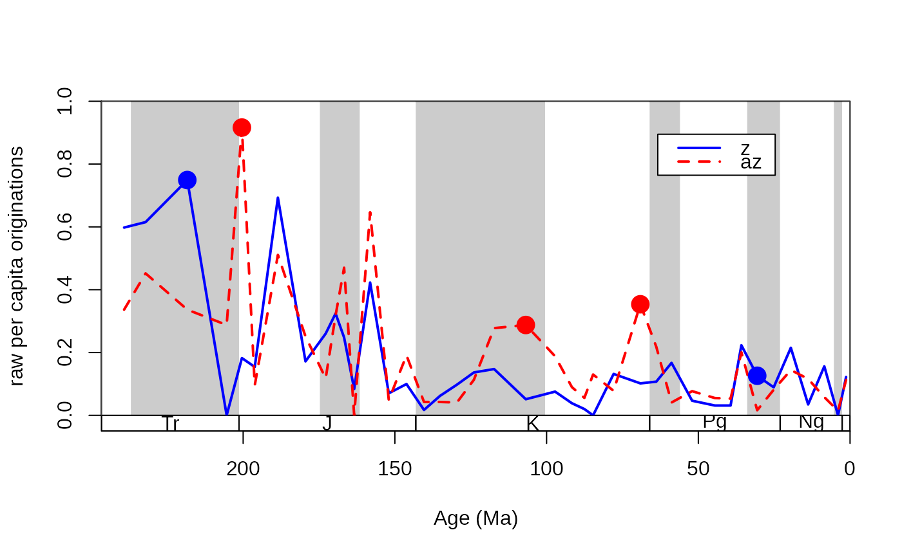

This function will determine whether there are meaningful differences between the taxonomic rates in the individual time bins of two subsets of an occurrence database.
Usage
ratesplit(
x,
sel,
tax = "genus",
bin = "stg",
rate = "pc",
method = "AIC",
AICc = TRUE,
na.rm = TRUE,
alpha = NULL,
output = "simple"
)Arguments
- x
(data.frame): The fossil occurrence data.- sel
(character): Variable name to do the splitting of the dataset. Can have only two levels.- tax
(character): Variable name of the occurring taxa (variable type:factororcharacter).- bin
(character): Variable name of the bin numbers of the particular occurrences (numeric). Bin numbers should be in ascending order,can containNAs, it can start from a number other than 1 and must not start with 0.- rate
(character): The rate metric. Currently only the per capita rates of Foote (1999) are available (rate="pc").- method
(character): Either"AIC","binom"or"combine". The"AIC"method calculates the Akaike weights of the single and dual rate models. The"binom"method assumes a binomial error distribution of the counts that are necessary for the rate calculations. The"combine"method shows slices that pass both tests, the"AIC"being usually the stronger.- AICc
(logical): Only applicable for the"AIC"method. Toggles whether the small sample corrected AIC (AICc) should be used instead of the regular one.- na.rm
(logical): Argument indicating whether the function should proceede whenNAs are found in theselcolumn. Setting this argument toTRUEwill proceede with the omission of these entries, whileFALSEwill coerce the function to output a singleNAvalue.- alpha
(numeric): Threshold to discriminate between meaningful and meaningless split. Ifmethod="AIC", the value corresponds to the minimum weight value the dual model should have. By default it is0.89, which corresponds to the likelihood ratio of 8. Ifmethod="binom", the value corresponds to the alpha value of the binomial test (default: 0.05). Ifmethod="combine"than two alpha values are required (1st for the AIC, 2nd for the binomial test). If alpha isNULL, than the default values will be used.- output
(character): Either"simple"or"full"."simple"returns the indices of the series where selectivity can be suggested."full"returns amatrixof Akaike weights, or binomial probabilities.
Details
Splitting an occurrence database to its subsets secreases the amount of information passed to the rate calculations and therefore the precision of the individual estimates. Therefore, our ability to tell apart two similar values decreases with the number of sampled taxa. In order to assess the subsets individually and compare them, it is advised to test whether the split into two subsets is meaningful, given the total data. Examples of this use can be found in Kiessling and Simpson (2011) and Kiessling and Kocsis (2015).
The meaningfulness of the split is dependent on the estimate accurracy and the magnitude of the difference. Two different methods are implemented: binom and combine.
References
Foote, M. (1999) Morphological Diversity In The Evolutionary Radiation Of Paleozoic and Post-Paleozoic Crinoids. Paleobiology 25, 1–115. doi:10.1017/S0094837300020236.
Kiessling, W., & Simpson, C. (2011). On the potential for ocean acidification to be a general cause of ancient reef crises. Global Change Biology, 17(1), 56-67.
Kiessling, W., & Kocsis, A. T. (2015). Biodiversity dynamics and environmental occupancy of fossil azooxanthellate and zooxanthellate scleractinian corals. Paleobiology, 41(3), 402-414.
Examples
# example with the coral dataset of Kiessling and Kocsis (2015)
data(corals)
data(stages)
# split by ecology
z<-corals[corals$ecology=="z",]
az<-corals[corals$ecology=="az",]
# calculate diversity dynamics
ddZ<-divDyn(z, tax="genus", bin="stg")
ddAZ<-divDyn(az, tax="genus", bin="stg")
# origination rate plot
tsplot(stages, boxes="sys", shading="series", xlim=54:95,
ylab="raw per capita originations")
lines(stages$mid, ddZ$oriPC, lwd=2, lty=1, col="blue")
lines(stages$mid, ddAZ$oriPC, lwd=2, lty=2, col="red")
legend("topright", inset=c(0.1,0.1), legend=c("z", "az"),
lwd=2, lty=c(1,2), col=c("blue", "red"), bg="white")
# The ratesplit function
rs<-ratesplit(rbind(z, az), sel="ecology", tax="genus", bin="stg")
rs
#> $ext
#> integer(0)
#>
#> $ori
#> [1] 57 59 75 81 88
#>
# display selectivity with points
# select the higher rates
selIntervals<-cbind(ddZ$oriPC[rs$ori], ddAZ$oriPC[rs$ori])
groupSelector<-apply(selIntervals, 1, function(w) w[1]<w[2])
# draw the points
points(stages$mid[rs$ori[groupSelector]], ddAZ$oriPC[rs$ori[groupSelector]],
pch=16, col="red", cex=2)
points(stages$mid[rs$ori[!groupSelector]], ddZ$oriPC[rs$ori[!groupSelector]],
pch=16, col="blue", cex=2)
